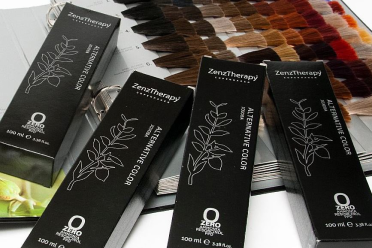
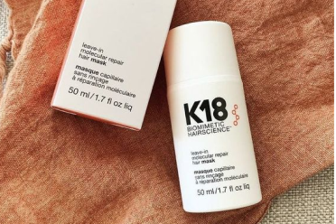
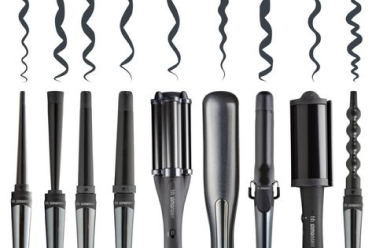
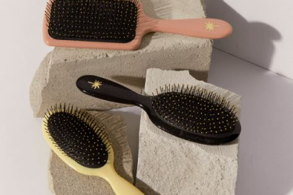
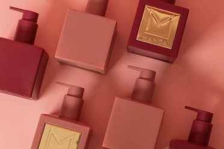

PRODUKTER
Hos NEW YORK Hair Salon lægger vi stor vægt på at bruge og sælge produkter, der er skånsomme mod miljøet, sikre for os som frisører og gavnlige for vores kunder. Vi ønsker at beskytte jer mod unødvendig kemi og samtidig sikre, at I får smukt og velplejet hår. Derfor vælger vi omhyggeligt de bedste produkter, som lever op til vores høje standarder for kvalitet og bæredygtighed.
Kevin.Murphy

KEVIN.MURPHY er et førende australsk brand, kendt for sin innovative tilgang til hårpleje ved at kombinere mode, performance og bæredygtighed. Produkterne er skabt med et højt indhold af naturlige ingredienser og er fri for parabener og sulfater, hvilket sikrer en skånsom behandling for både hår og hovedbund. Brandet engagerer sig dybt i miljøbeskyttelse ved at anvende genbrugsplast, primært fra havet, til deres emballage og sikrer, at alle deres produkter er cruelty-free. I vores salon anvender vi KEVIN.MURPHY til at vaske og style dit hår, så du opnår et sundt og velplejet look. Du har også mulighed for at købe produkterne med hjem og fortsætte den eksklusive pleje.
ZenzTherapy
Når det kommer til hårfarvning, vælger vi ZenzTherapy – Alternative Color. Dette danske mærke har en filosofi, hvor det, de undlader at tilsætte deres produkter, er lige så vigtigt som det, de tilføjer. Produkterne er udviklet med fokus på renhed og indeholder ingen PPD, ammoniak eller resorcinol, men er rige på nærende jojobaolie. Vi anvender ZenzTherapy's farver og blegemidler i salonen for at sikre en skånsom og effektiv behandling, der respekterer både dit hår og din sundhed.
K18
K18 er et banebrydende brand inden for hårpleje, der anvender biomimetisk teknologi for at genoprette hårets sundhed og styrke på et molekylært niveau. Deres produkter er fri for parabener, sulfater og skadelige kemikalier, og de er designet til at reparere skader forårsaget af farvning, varme og andre miljømæssige påvirkninger. I salonen bruger vi K18 til at sikre, at dit hår forbliver sundt, stærkt og strålende. Du kan også købe deres produkter med hjem for at forlænge den professionelle pleje.
HH Simonsen
HH Simonsen er synonymt med skandinavisk kvalitet og innovativ teknologi inden for hårpleje og styling. Deres værktøjer og produkter er udviklet til at give professionelle resultater, samtidig med at de beskytter og plejer håret. Fra føntørrere til glattejern og stylingprodukter, er HH Simonsen dedikeret til at sikre, at dit hår altid ser fantastisk ud. Vi bruger HH Simonsen i salonen for at opnå de bedste resultater, og du kan også finde deres produkter hos os, så du kan style dit hår derhjemme som en professionel.
Fan Palm
FANPALM er et eksklusivt mærke, der kombinerer luksus og naturlighed i deres hårplejeprodukter. Med ingredienser hentet fra bæredygtige kilder, er FANPALM's produkter designet til at give dit hår en uimodståelig glans og blødhed, uden at gå på kompromis med miljøet. Deres produkter er fri for parabener, sulfater og kunstige farvestoffer, og de er cruelty free. Vi anvender FANPALM i vores behandlinger for at give dit hår den ultimative luksusoplevelse, som du også kan tage med hjem.
MANDA of Scandinavia
MANDA of Scandinavia repræsenterer det bedste inden for naturlig hårpleje og styling. Dette mærke kombinerer skandinavisk æstetik med en dyb respekt for miljøet, og deres produkter er skabt med ingredienser, der er skånsomme mod både hår og natur. MANDA’s produkter er fri for skadelige kemikalier og er designet til at styrke og beskytte håret samtidig med at de leverer professionelle resultater. I vores salon anvender vi MANDA for at sikre, at dit hår får den bedst mulige pleje med et naturligt og sundt udseende. Produkterne kan også købes hos os, så du kan nyde godt af den skandinaviske kvalitet derhjemme.